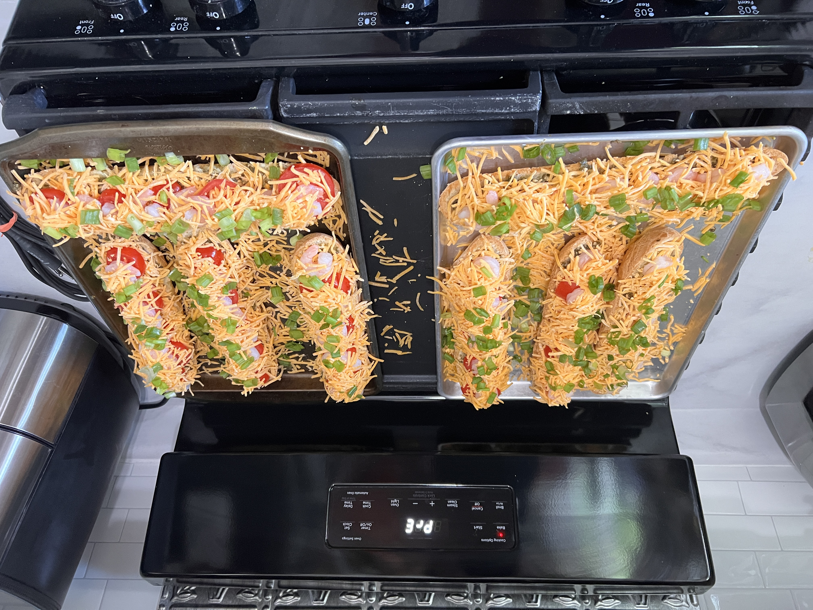
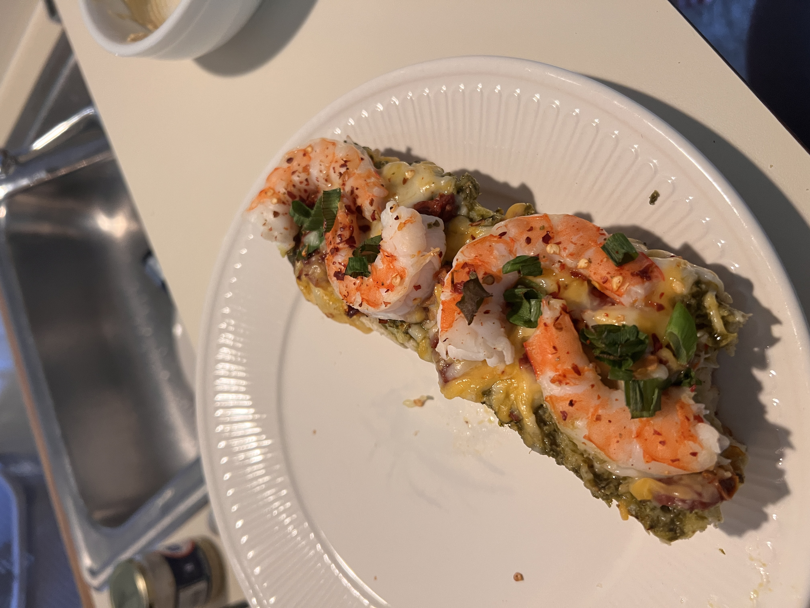

Home
Shrimp Pesto Baguette
Description
Makes about 6 servings
Ingredients
- 1/3rd cup pesto
- 1 Italian bread shell (16 oz, 12-inch)
- 2 cups (8 oz.) Italian cheese blend
- 8 ounces cooked shrimp
- 1/2 cup coarsely chopped softened sun-dried tomatoes
- 1/4th cup minced green onion (optional)
- 1/4th teaspoon crushed red pepper flakes
Steps
- Place bread shell on baking sheet
- Spread evenly with pesto
- Sprinkle with half of the cheese
- Place shrimp and tomatoes on top
- Sprinkle remaining cheese
- Sprinkle with onion and crushed red pepper
- Bake at 450o F for 10 minutes or until cheese is melted.
Results

